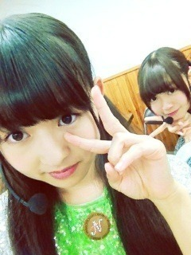
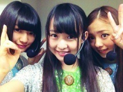

2012/1024Wed270回目*marika
いつも読んでくださってる方、
初めて読んでくださった方、
コメントしてくださった方、
ありがとうございます。
どーん

テスト終わりました！
ちょとだけだらーんとして
いいですか
その後、ちょっとした
お仕事とレッスン
か い ほ う か ん

友達ともんじゃ行く約束した♪
ああああーもんじゃー
明太チーズもちー
久しぶりに質問回答します。↓
**********
 まりかはいつもオシャレだよね
まりかはいつもオシャレだよね研究したりしてるのかな？
 ありがとうございます
ありがとうございます
研究というか、すきで
雑誌とか見てるだけですよ。
暇なときって何してるん？寝る。漫画雑誌読む。ボーッとしてる。
ついしてしまう癖ってあるん？ケータイで何か調べるときとか、画面が出るまで待つとき
指がちょいちょいちょいちょい
て動く。主に人差し指と中指 笑
顎に手をおくのも癖！
尊敬する人っている？いるよ！んー、あえて言わない笑質問メッチャ来られるのってしんどい？
答えやすいものを選んでます
しんどくないです。
ただ、テスト期間など...
時間がなかったときは
お休みすることはあります。
ジョジョ知らないよね？知ってるよーおしゃれ！めっちゃ流行ってる。
ブログ読む限りメンバーみんな
ジョジョ化してますね笑
日常的に腕時計を使いますか？持ってるけど、あんまり使わないかなぁ...
アクセ代わりに付けることはある！
気に入った洋服はパッと買う？ジックリ品定めして買う？
...イメージ的にはパッと買ってそう。
実は、自分でなかなか服を買う勇気がないです。
買って失敗したことが
何度かあったから←
最近は思い切って買えるように
なってきたけど...
優柔不断うじうじ発動
買って後悔する前にママに聞いたり、
悩んでから買うよ。
いつか大人買いしてみたいよー
ハロウィンパーティするとしたらどんな仮装がしたい？？
もけもけのおばけ、ゾンビ**********

ありがとう！めがしゃきっとしました
気合いいれる。乃木充！
まりか
2012/1023Tue269回目*marika
いつも読んでくださってる方、
初めて読んでくださった方、
コメントしてくださった方
ありがとうございます！
絶賛テスト勉強中
＼まいやん、せっちゃん／
土曜日は握手会だよ
何着よう。決めてないー
秋ぽいのが良いよね。！
*****
よくコメントで
メイクの仕方聞かれるんだけど、
そんなにこだわりとかありません
最初の頃はしっかりメイクしたくて
マスカラばさばさとかに憧れてたけど
今はナチュラル派です‼
自分でメイクするときは
血色感のあるチークとリップで、
ラインが太くならないように
気をつけてます。目尻はちょっと長め
ナチュラルなのが良い分、
健康的な素肌で血色よくなるように
リンパマッサージとかして
頑張ってます
いろんなメイクしてみたいなぁ。
いつかやる機会があったらいいな！
今日はだいぶ女の子なブログだ
編み込み外したらいい感じだ！
明日でテストおーわり。
終わったら乃木充するぞ !!!!!!!
!!!!!!!
!!!!!!!まりか
2012/1022Mon268回目*marika
いつも読んでくださってる方、
初めて読んでくださった方、
コメントしてくださった方、
ありがとうございます。
＼なかいさん／

絶賛テスト勉強中。
みかん美味。
頭プシュー
......
乃木ここの感想
ありがとうございました！
えーとフジヤマで
前髪なくなったことは置いといて←
笑っていただいたようでよかった！
自分で勝手に作ったミッションも
クリアしたし！(手でハートするやつ)
絶叫マシン苦手そうに見えて
案外乗れちゃう私。
一回目はこわいけど、
次は余裕で乗れるよ たぶん
たぶん
たぶんフジヤマはよだれが出る。
頑張って目を開けてたら涙も出る。
レッドタワーは...高かった。
誰か一緒にいこー←
それにしてもあのヘルメットに
付いてるカメラ恐ろしいね。
あかん角度だよ
というか私あかんあかん
言い過ぎだったね。うるさかった。
ゲームとかしてても
よく言ってしまうんです。
癖だなー...
みんなのリアクション見て
爆笑しちゃった！
結果どうなるんだろう。
次もお楽しみに♪
......
マイクでかかった！
ほんとになめてないよ
明日も頑張るーーーーーーーーー
まりか
2012/1021Sun267回目*marika
いつも読んでくださってる方、
初めて読んでくださった方、
コメントしてくださった方、
ありがとうございます。
「第23回 信濃の国 楽市楽座
～ファミリーで楽しむ秋～」
長野県におじゃましました
最高でしたー！
なんかなんか盛りだくさんだった！
♪走れ！Bicycle
♪おいでシャンプー→生駒ちゃん
♪涙がまだ悲しみだった頃→あすか
♪狼に口笛を
♪左胸の勇気
♪ぐるぐるカーテン→さゆにゃん
♪会いたかったかもしれない
ライブ2回‼
フルで7曲も‼わお
「夢テレビ！2012」
で前半生中継にも
出させていただきました。

かなりん、まひろ、私の3人は
スマイル！ダンスコンテスト決勝大会
にも出させていただき...
ダンス鑑賞がすきな私にとって
このような機会をいただいたことが
すごく嬉しかった
やばかった！！！！！！！！！！
感想聞かれたときは
上手く言えなかったけど、
ももももうね、
ダンスって素晴らしい。
TV番組でダンス大会とかやってたら
必ず見る人だから、感動して
おりました...トリハダタッタヨ
こんなダンス踊れたらいいなあ。
でもダンスって見るだけでも楽しい♪
私も見てる人を楽しませたい。
4thシングルはダンスが難しいから
みんなで合わせるの大変だけど、
めっちゃ頑張らな
長野県のみなさんに乃木坂46を
少しでも知ってもらえたかな？
わざわざ長野に来てくださった
まりっ会のみなさん、
バッチリ見えました
ありがとうございました
......
昨日ホテルは美雲とペアでした。
めずらしいでしょ??
いっぱい語ったー
なんか嬉しかったな。
英語教えてくれてありがとう
美雲先生！←
よっしゃテストがんばろー...うう
まりか
2012/1020Sat266回目*marika
ゆみ姉は最年長でみんなから
いじられるお姉ちゃん！
私がかまってーって行くと
めんどくさそうな顔しても
一緒にしゃべってくれた^^
優しくて頼れるお姉ちゃん。
そんなゆみ姉は、
乃木坂46を卒業します。
ゲームを熱く語るゆみ姉。
ボケたらツッコむゆみ姉。
メンバーにいじられて
怒ってる姿がかわいいゆみ姉。
メンバーが泣いてたとき
慰めてくれたゆみ姉。
笑顔でパフォーマンスしてるゆみ姉。
...やっぱりさびしいよ。
私、ゆみ姉の歌とダンスが
だいすきです。
本当はもっと一緒に
パフォーマンスしたかった。
でも、ゆみ姉の夢。
私は全力で応援します。
全力で支えます。
乃木坂46を卒業しても
坂を登り続けてください。
努力！感謝！笑顔！
卒業しても
だいすきなお姉ちゃんです！
ラブゆみこ
だーーーーーいすき^^
個握、似顔絵会
頑張ろうね！
まりか